la matemática discreta estudia una serie de estructuras como algoritmos, grafos y teoría de números, que son el fundamento de las ciencias de la computación.
Pensemos que en que el cálculo infinitesimal se trabaja sobre los números reales, mientras que la matemática discreta descansa sobre la base de los números naturales.
Principio de la suma o adición: Supongamos que un evento E puede ocurrir en m formas y un segundo evento F puede ocurrir en n formas, y supongamos que ambos eventos no pueden ocurrir en forma simultánea (disjuntos o mutuamente excluyentes).
Ejemplo
En la Biblioteca de la UMG Jalapa, tienen 25 libros
de Matemática Discreta, 15 de Algoritmos y 5 de
Contabilidad II. Si un alumno solo puede pedir
prestado un libro a la vez ¿Con cuantas opciones
cuenta?
25 + 15 + 5 = 45 Opciones
Ejercicio
¿Cuántos resultados distintos se pueden obtener si se
lanza en el siguiente orden: una moneda, un dado,
una moneda?
Moneda 2 Lados
Dado 6 Lados
Moneda 2 Lados
2 * 6 * 2 = 24 resultados distintos
Permutaciones y Combinaciones
Permutaciones con Repetición
Son las más fáciles de calcular. Si tienes n cosas para elegir y eliges r de ellas, las permutaciones posibles son:
n × n × ... (r veces) = nr
Porque hay n posibilidades para la primera elección, DESPUÉS hay n posibilidades para la segunda elección, y así hasta llegar a la ultima posición.
Combinaciones
Una combinación es un arreglo de elementos en donde el orden no importa.
Sin repetición: Si cada elemento puede aparecer como mucho una vez
Con repetición. En cambio si no hay esta restricción
,
Ejemplo
Por ejemplo en la cerradura de arriba, hay 10 números para elegir (0,1,...,9) y eliges 3 de ellos:
Cuantos números de 4 cifras se pueden formar con los dígitos 2, 4, 6, 8 si:
– Las cifras se pueden repetir
– Las cifras no se pueden repetir
Permutacion con repeticion
- cantidad de posiciones: 4
- cantidad de cifras: 4
- Formula: 4⁴
- 4 * 4 * 4 * 4 = 256
Permutacion sin repeticion
- cantidad de cifras: 4
- 4!
- 4 * 3 * 2 * 1 = 24
Teoría de Conjuntos
Conjunto
Un conjunto es una colección o clase de objetos
bien definidos. Estos objetos se llaman elementos o
miembros del conjunto.
Determinación de Conjuntos por
Comprensión
Un conjunto se determina por comprensión
enunciando la propiedad o cualidad que distingue a
los elementos.
- Para tal fin se utiliza lo siguiente:
- {x/x cumple la propiedad},
Ejemplo
- A={x/ x es un color de la bandera de Guatemala}
- B={x/ x es una letra de la palabra “murciélago”}
- D={ x/ x es un número natural menor que 10}
- E={ x/ x es número primo entre 0 y 20}
Ejercicio
Teniendo:
– A = {X/X Números enteros positivos menores a 16}
– B = {X/X Primeras 10 letras del alfabeto}
– C = {2, 4, 6, 8, 10, 12, 14, 16}
– D = {M, U, R, C, I, E, L, A, G, O}
– E = {X/X símbolos utilizados en el sistema de numeración hexadecimal}
– Clacular:
1. (A + C) U (B – D)
2. (E ∩ A) – (E U B)
3. (A ∩ C ∩ E) + (B U D)
4. (E – A) ∩ (A U B U C)
1. (A + C) U (B – D)
{1, 2, 3, 4, 5, 6, 7, 8, 9, 10, 11, 12, 13, 14, 15} U {a, b, c, d, e, f, g, h, i, j}
{1, 2, 3, 4, 5, 6, 7, 8, 9, 10, 11, 12, 13, 14, 15, a, b, c, d, e, f, g, h, i, j}
2. (E ∩ A) – (E U B)
{1, 2, 3, 4, 5, 6, 7, 8, 9, 10, 11, 12, 13, 14, 15} - {0, 1, 2, 3, 4, 5, 6, 7, 8, 9, A, B, C, D, E, F}
{10, 11, 12, 13, 14, 15}
3. (A ∩ C ∩ E) + (B U D)
{2,4,6,8}) + {a, b, c, d, e, f, g, h, i, j, M, U, R, L, O}
{2,4,6,8, a, b, c, d, e, f, g, h, i, j, M, U, R, L, O}
4. (E – A) ∩ (A U B U C) {A, B, C, D, E, F} ∩ {1, 2, 3, 4, 5, 6, 7, 8, 9, 10, 11, 12, 13, 14, 15, a, b, c, d, e, f, g, h, i, j, 16}
{a, b, c, d, e, f}
Induccion Matematica
La inducción matemática es un método de
demostración que se utiliza cuando se trata de
establecer la veracidad de una lista infinita de
proposiciones.
- El método es bastante natural para usarse en una
variedad de situaciones en la ciencia de la
computación.
- Los números naturales se definen de manera
inductiva. Es decir, incluso hablando muy
informalmente, al describir los números naturales no
podemos nombrar a todos los números naturales
puesto que son infinitos, lo que hacemos
normalmente es decir algo como “1 es un número
natural, también 2 y 3 y 4 y así te sigues, si le sumas
1 a un número natural te da otro número natural”.
Analogía de los Dominós
Si ponemos todos nuestros dominós parados en una fila, necesitamos sólo asegurarnos de dos cosas para que se caigan:
- a) Que exista al menos un dominó que se caiga.
- b) Que si un dominó cae, empuja al siguiente.
- Para la primera parte, no tiene que ser el primer dominó. Si tiramos el primero, queremos que se caigan todos; pero si tiramos el segundo o el tercero o el quinto, queremos que se caigan todos después el que tiramos.
- Para la segunda parte tenemos que asegurarnos que la distancia entre cada dos dominós no sea demasiada o que estén en el ángulo correcto, porque si uno solo no empuja al que sigue, entonces no se van a caer todos.
- Los números naturales son como un conjunto infinito pero ordenado de dominós, donde cada dominó tiene escrito un número. Las pruebas por inducción son como ordenar nuestros dominós parados en una fila y ver si es posible empujar alguno para que se caigan todos.
- a) El caso base es asegurarse de que exista un primer dominó que se caiga.
- b) El paso inductivo es suponer que si cumple para algún entero, cumple para el siguiente. Como sabemos que cumple para el caso base, entonces cumple para el siguiente; como cumple para el siguiente, cumple a su vez para su siguiente y así sucesivamente cumplen todos los enteros a partir del caso base.
- Esos dos pasos nos aseguran que se caen todos los dominós sin necesidad de verlos caer.
,
Ejemplo
Demostrar que para cualquier numero se cumple
que:
1+2+3+⋯+n=(n(n+1))/2
Mínimo Común Múltiplo: El mínimo común múltiplo (mcm) es el número
positivo más pequeño que es múltiplo de dos o más
números.
Máximo Común Divisor: Dados dos números enteros positivos su máximo
común divisor no es más que el mayor de los
divisores comunes de ambos números
- Ejemplo de cálculo del m.c.d. Tomemos 45 y 75. Los
divisores de esos números son:
- Divisores de 45: 1, 3, 5, 9, 15, 45.
- Divisores de 75: 1, 3, 5, 15, 25, 75.
,
EL ALGORITMO DE EUCLIDES Euclides observó la división entera de dos
números a, b, con a>b. La división entre a y b -
razonaba Euclides- es una relación entre dos
enteros a y b como sigue:
- a=b·c+r
- Y en consecuencia:
-m.c.d.(a, b)=m.c.d.(b, r)
Ejemplo
Calcular el MCD de 25 y 55
25, 55
55 = 25 * 2 + 5
25 = 5 * 5 + 0 MCD = 5
Ejercicio
Utilizando el algoritmo de EUCLIDES calcular el MCD de: 18, 120 80, 33
Grado de Vértice - El grado de un vértice se puede definir como la
cantidad de aristas que parten desde o hacia un
mismo vértice
Rutas y Circuitos de Euler - Ruta de Euler: Una ruta o camino de Euler es una
trayectoria que contiene todas las aristas del grafo y
recorre una arista exactamente una vez
- Condiciones:
- El Grafo debe de ser conexo
- Exactamente 2 vértices son de grado impar, todos los
demás deben de ser de grado par
- Se comienza en uno de los vértices de grado impar y
se termina en el otro vértice impar
Circuito de Euler Un circuito de Euler es un Camino de Euler con la
diferencia que empieza y termina en el mismo
vertice es decir es un camino cerrado que recorre
cada arista exactamente una vez
Condiciones:
El grafo es conexo
Todos los vértices son de grado par
Se comienza y se termina en el mismo vertice
Ejemplo
Calcular la Ruta o Camino de Euler del siguiente
grafo:
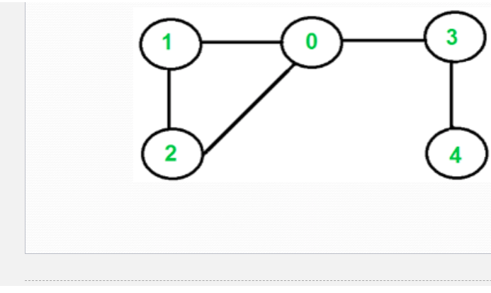
Ejercicio
Analice los siguientes grafos y calcule:
– Su ruta o ciclo de Euler
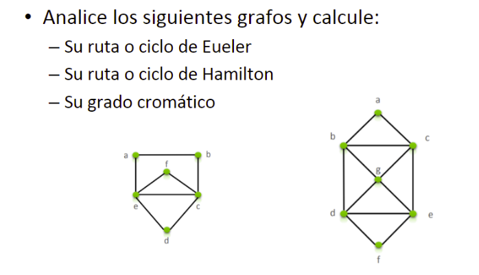
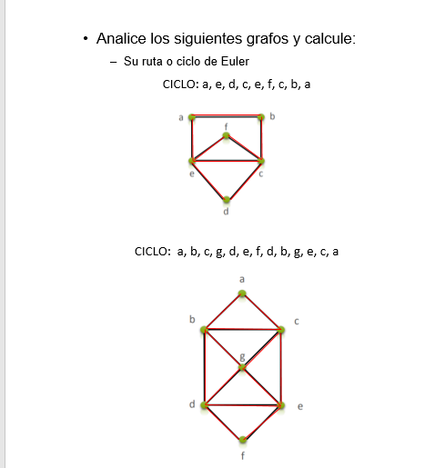
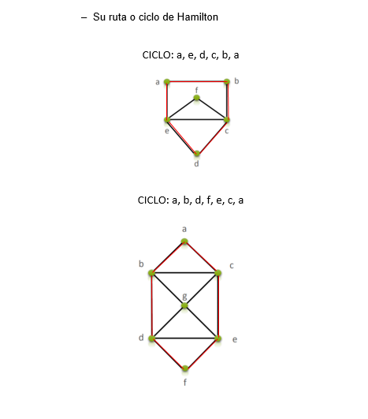
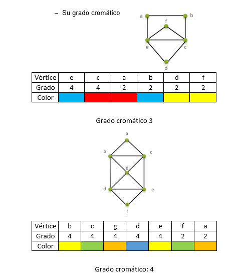
Teoría de Arboles
Definición
Desde el punto de vista conceptual, un árbol es un caso
particular de grafo, es un objeto que comienza con una raíz y
se extiende en ramificaciones o lineas que terminan en un
nodo.
Representan la estructura no-lineal y dinámica de datos más
importante en computación. Dinámica porque puede cambiar
durante la ejecución de un programa y no-lineal porque a
cada elemento del árbol pueden seguirle varios elementos.
Es un conjunto de nodos y líneas. Un nodo es un elemento de
información que reside en un árbol. Una línea es un par de
nodos ordenados, , y a la secuencia de lineas se le
llama ruta (path).
Ejemplo
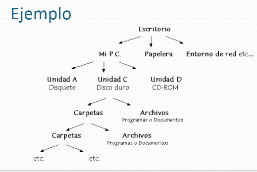
Ejercicio
Para los siguientes arboles calcular
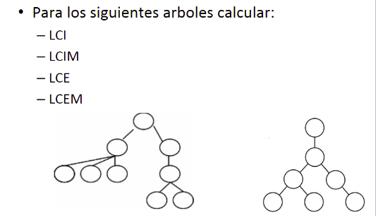
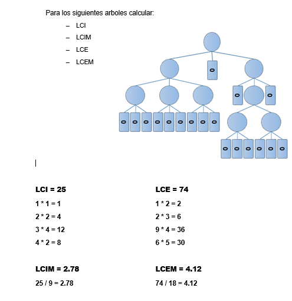
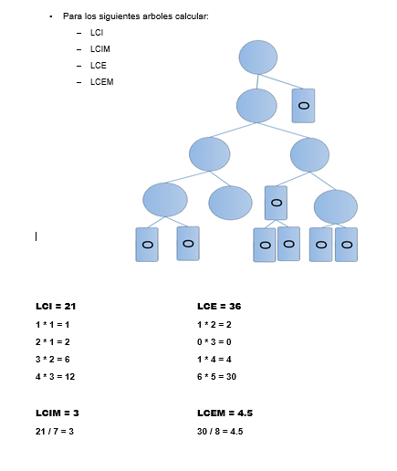
Recorrido de Arboles
Árbol Binario
Un árbol binario es un tipo de árbol en que cada
vértice máximo puede tener dos hijos; su nodo raíz
está enlazado a dos subárboles binarios disjuntos
denominados subárbol izquierdo y subárbol derecho.
Los árboles binarios no son vacíos ya que como
mínimo tienen el nodo raíz.
Recorrido de un Árbol binario Un recorrido en un árbol binario es Una operación
que consiste en visitar todos sus vértices o nodos,
de tal manera que cada vértice se visite una sola
vez.
Se distinguen tres tipos de recorrido: INORDEN,
POSORDEN Y PREORDEN.
En cada recorrido se tiene en cuenta la posición de
la raíz (de ahí su nombre) y que siempre se debe
ejecutar primero el hijo izquierdo y luego el derecho.
Recorrido Preorden Preorden: (raíz, izquierdo, derecho). Para recorrer
un árbol binario no vacío en preorden, hay que
realizar las siguientes operaciones recursivamente
en cada nodo, comenzando con el nodo de raíz:
Visite la raíz
Atraviese el sub-árbol izquierdo
Atraviese el sub-árbol derecho
Ejemplo
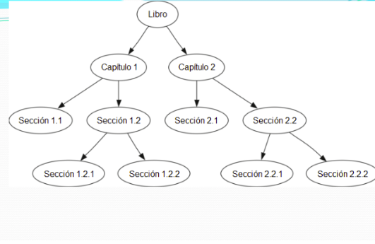
Ejercicio
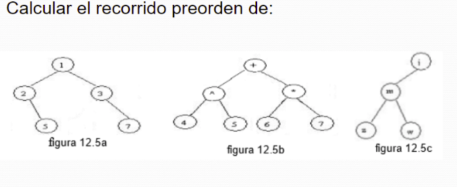
Crear un árbol de búsqueda con los siguientes
datos:
43, 10, 8, 54, 15, 50, 53
Construir un árbol de búsqueda con los siguientes datos:
65 85 74 40 86 80 18 21 18 89
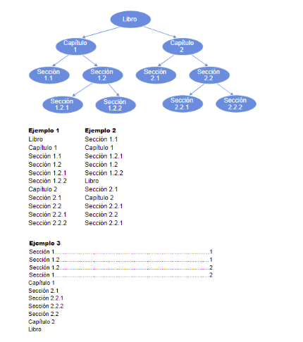
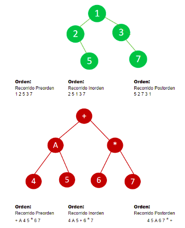
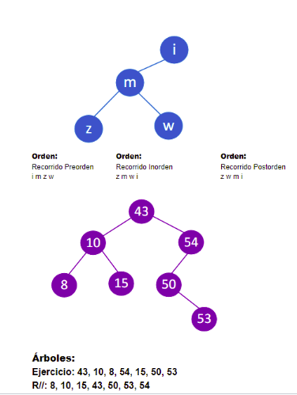
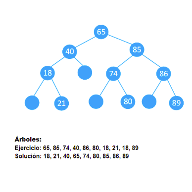
Algebra Vectorial
Cantidades Escalares y Vectoriales
Cantidad Escalar:
Esta especificada por un valor con la unidad
apropiada
Ejemplo: Temperatura, Masa, Volumen, Tiempo
Estas cantidades pueden tener valores positivos,
negativos o tener un valor cero
Sus operaciones matemáticas se realizan utilizando
las reglas de la aritmética
Cantidad Vectorial Son aquellas que quedan totalmente definidas con un
módulo, una dirección y un sentido.
Es el caso de la fuerza, la velocidad, el
desplazamiento. En estas magnitudes es necesario
especificar hacia dónde se dirigen y, en algunos casos
dónde se encuentran aplicadas.
Todas las magnitudes vectoriales se representan
gráficamente mediante vectores, que se simbolizan a
través de una flecha.
Vector
Un vector tiene tres características esenciales:
módulo, dirección y sentido.
Los vectores se representan goemétricamente con
flechas y se le asigna por lo general una letra que en
su parte superior lleva una pequeña flecha
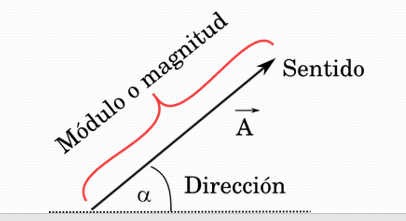
Modulo está representado por el tamaño del vector, y hace
referencia a la intensidad de la magnitud ( número).
Se denota con la letra solamente A o |A|
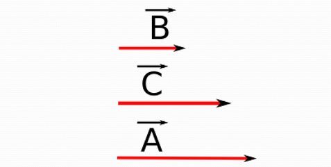
Dirección Corresponde a la inclinación de la recta, y
representa al ángulo entre ella y un eje horizontal
imaginario. También se pueden utilizar los ejes de
coordenadas cartesianas (x, y, z) como también los
puntos cardinales para la dirección.
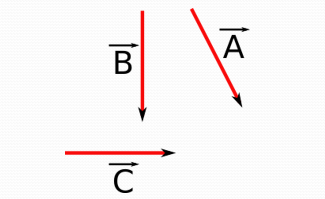
Sentido está indicado por la punta de la flecha. (signo
positivo que por lo general no se coloca, o un signo
negativo).
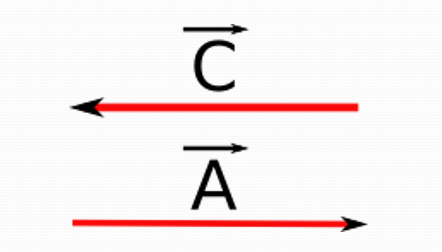

{kind=link}
{kind=link}
{kind=link}
{kind=link}
{kind=link}
{kind=link}
{kind=link}
{kind=link}
{kind=link}
{kind=link}
{kind=link}
{kind=link}
{kind=link}
{kind=link}
{kind=link}
{kind=link}
{kind=link}
{kind=link}
{kind=link}
{kind=link}
{kind=link}
{kind=link}
{kind=link}